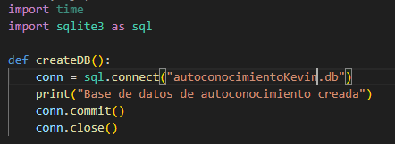
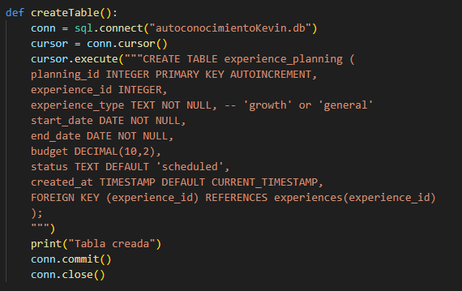
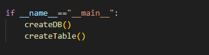
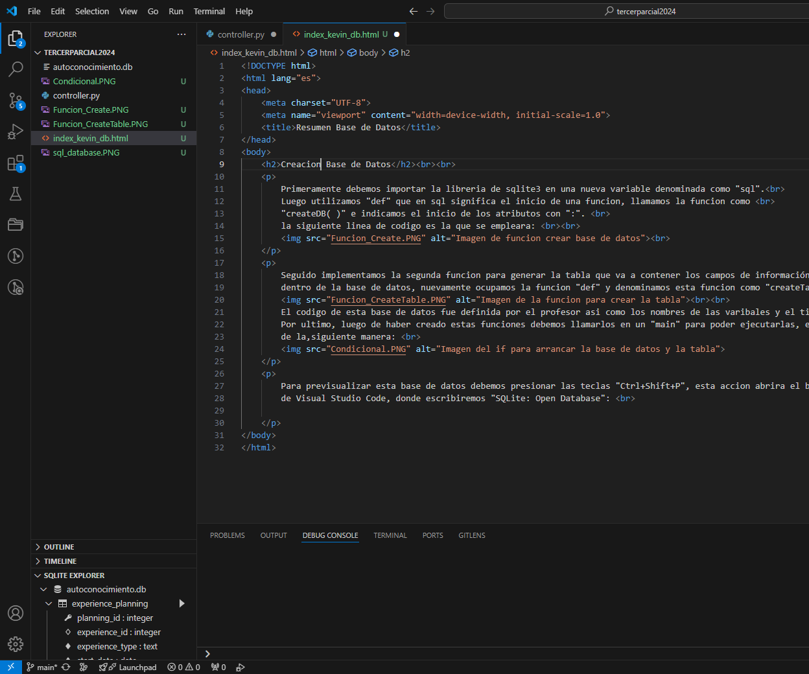
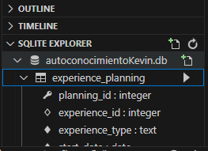
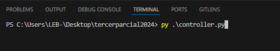
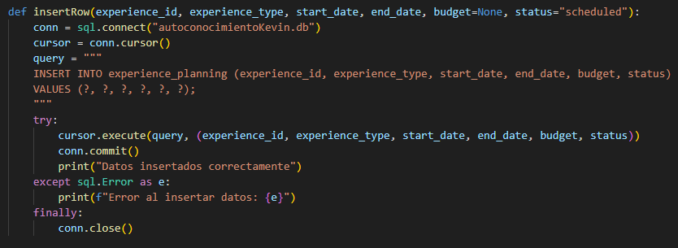
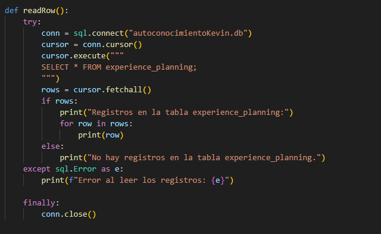

Primeramente debemos importar la libreria de sqlite3 en una nueva variable denominada como "sql".
Luego utilizamos "def" que en sql significa el inicio de una funcion, llamamos la funcion como
"createDB( )" e indicamos el inicio de los atributos con ":".
la siguiente linea de codigo es la que se empleara:

Seguido implementamos la segunda funcion para generar la tabla que va a contener los campos de información
dentro de la base de datos, nuevamente ocupamos la funcion "def" y denominamos esta funcion como "createTable(
):"

El codigo de esta base de datos fue definida por el profesor asi como los nombres de las varibales y el tipo de
dato que puede almacenar.
Por ultimo, luego de haber creado estas funciones debemos llamarlos en un "main" para poder ejecutarlas, esto se
definde
de la,siguiente manera:

Para previsualizar esta base de datos debemos presionar las teclas "Ctrl+Shift+P", esta accion abrira el
buscador
de Visual Studio Code, donde escribiremos "SQLite: Open Database":

Podemos ver que en la parte inferior izquierda se despliega un nuevo apartado y es aqui donde podemos observar
el contenido de la base de datos creada con los comandos:

Pero para que esto ocurra debemos abrir un terminal desde el cual podamos ejecutar estas funciones, se vera así:

Seguido a esto, una vez creada la base de datos y la tabla, debemos crear la funcion que nos permitira
enviar los datos a la base de datos y se ve asi:

Y el comando para que se retornen los datos de la base de datos por medio del terminal es el siguiente :
